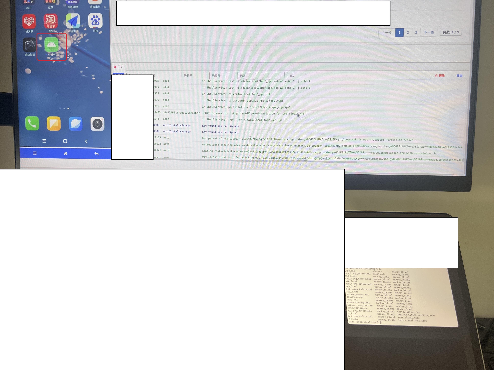
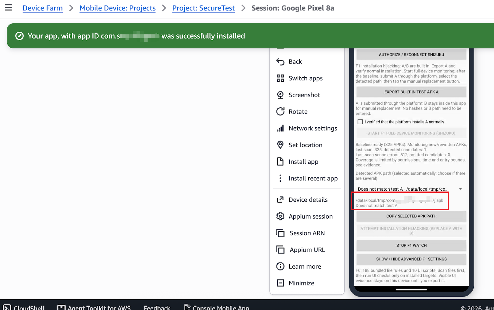
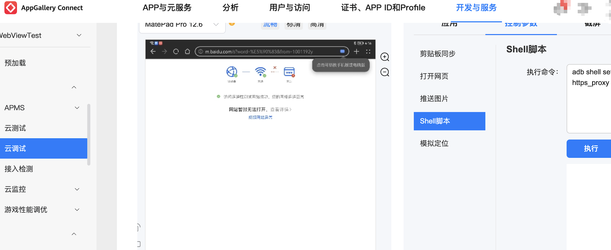

ACTScope · Paper artifact
Supporting Evidence
Installation hijacking, installation-path discovery, and network-proxy interference across cloud testing platforms.
AppGallery Connect1. Installation hijacking (F1) | Xiaomi Cloud Testing Platform2. Successful installation hijacking (F1) | AWS Device Farm3. Installation-path discovery (F1) | AppGallery Connect4. Network-proxy interference (F3) |
|---|---|---|---|
 |  |  | |
Demonstration of installation hijacking on AppGallery Connect. | Successful installation hijacking on Xiaomi Cloud Testing Platform, with the application icon and installation logs shown. | The on-device probe identifies an APK staging path on AWS Device Farm; this image shows the discovery stage. | Shell-based proxy interference on AppGallery Connect, shown alongside a browser connectivity error. |